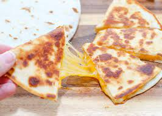

Quesadilla

This is a cheesey quesadilla. Kids like them, grownups love them.
This is a paragraph describing how dangerously cheesey a quesadilla can be.
Pragraphs don't have automatic line breaks.
Ingredients
Steps
- Put butter on tortilla and throw in pan.
- Shred cheese on top of tortilla.
- Fold half of tortilla in over cheese.
- Flip after cheese has melted to crunch up the top side.
Main Page